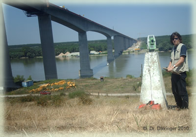

Entstehung
Tradition, Erfahrung und Verlässlichkeit in der Zivilgeometrie.
Unsere Geschichte
Ein Büro mit Tradition
Das Büro Daxinger blickt auf eine langjährige Tradition in der Zivilgeometrie zurück. Gegründet mit dem Anspruch, höchste fachliche Kompetenz mit persönlichem Engagement zu verbinden, hat sich das Unternehmen als verlässlicher Partner für Vermessungsaufgaben in der Region Garsten und darüber hinaus etabliert.
Als Ziviltechnikergesellschaft verbinden wir akademische Expertise mit praktischer Erfahrung. Unser Büro steht für Präzision, Verlässlichkeit und nachhaltige Lösungen – Werte, die wir seit Beginn unserer Tätigkeit konsequent verfolgen.
Dipl.-Ing. Dr. techn. W. Daxinger leitet das Büro mit fundiertem Fachwissen und langjähriger Erfahrung im Bereich der Vermessungstechnik und des Liegenschaftsrechts.

Vermessungsarbeiten im Gelände · © Dr. Daxinger
Lernen Sie unser Leitbild kennen
Beraten, Begleiten, Umsetzen – die Werte hinter unserer Arbeit.